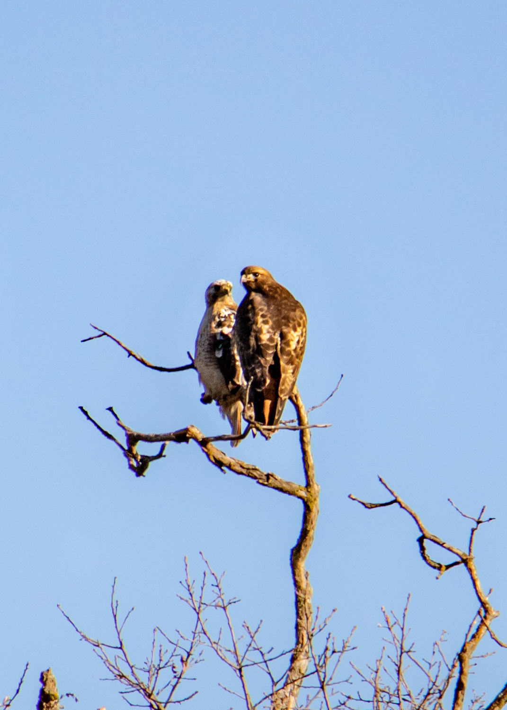
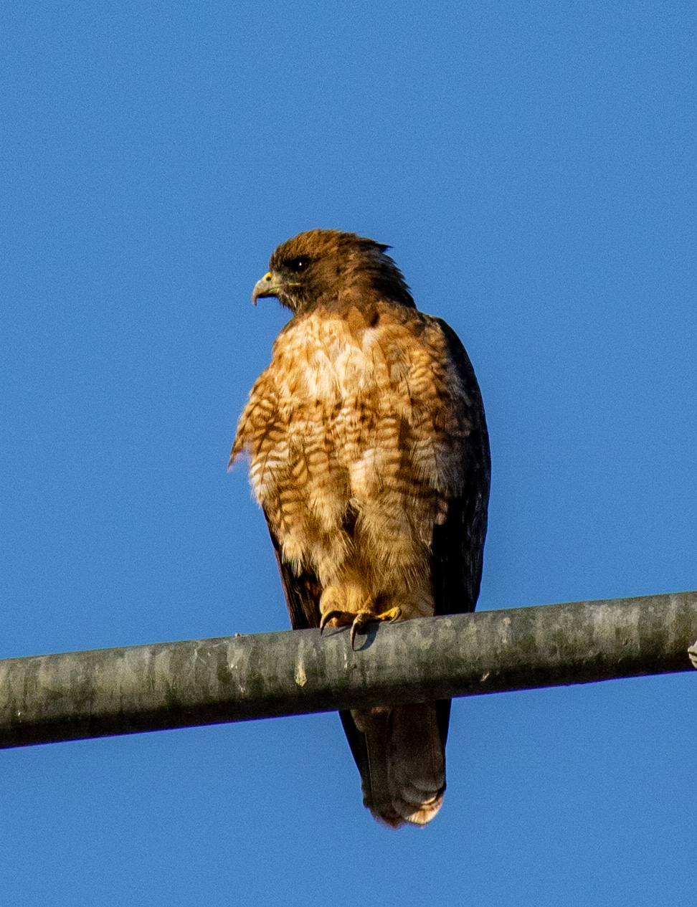
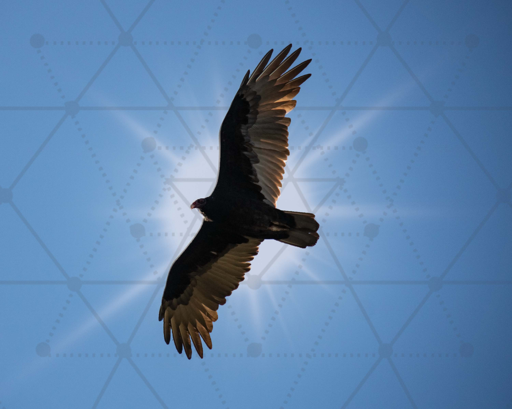

Portrait and personal photography
Portrait sessions for individuals, couples, families, artists, and local makers who want images that feel warm, natural, and personal.
Chelsea Whitney Art is rooted in wildlife, macro detail, portrait photography, event coverage, and local creative work inspired by the natural beauty of Southern Oregon. From personal portraits to weddings and meaningful gatherings, every piece is shaped with care, personality, and a strong sense of place.
Chelsea Whitney Art offers photography and visual artwork that feels grounded, personal, and connected to the landscapes, gatherings, textures, and quiet moments of the Rogue Valley.
Portrait sessions for individuals, couples, families, artists, and local makers who want images that feel warm, natural, and personal.
Wedding photography and event coverage for celebrations, community events, and special occasions captured with a calm, thoughtful eye.
Wildlife photography, close-up nature studies, digital art, and commissioned visual pieces inspired by detail, atmosphere, and the natural world.
The portfolio brings together wildlife photography, close-up studies, and imaginative digital artwork, while the studio also offers portraits, weddings, and event photography shaped by the same calm eye for detail, mood, and natural beauty.



Chelsea Whitney Art is a local creative business centered on photography, artwork, and meaningful visual storytelling. The work is shaped by a love of wildlife, a close attention to detail, and a connection to the landscapes, people, and natural rhythms of Southern Oregon.
From portrait sessions and weddings to prints, personal commissions, and creative collaborations, the studio stays rooted in a genuine, artist-led point of view.
Chelsea Whitney Art is available for portraits, weddings, event photography, wildlife and nature photography, creative commissions, and visual artwork with a warm, thoughtful, and local point of view.